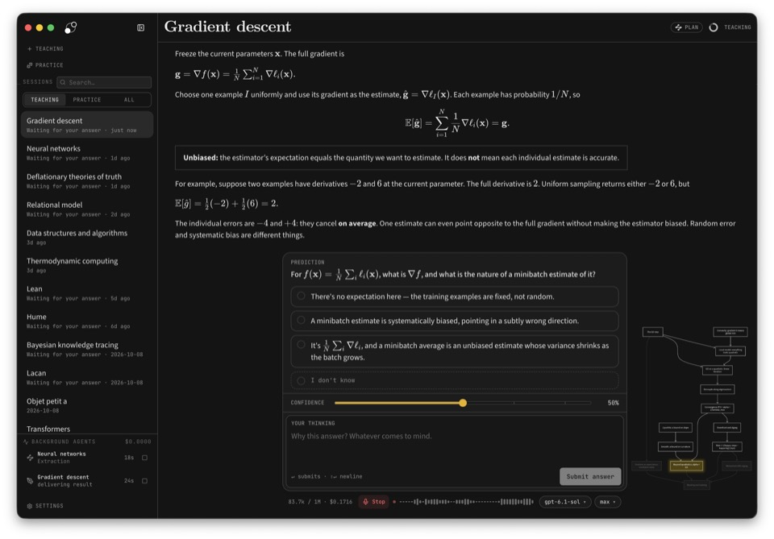

1. Teaching (Probe -> Plan -> Teach)
Agents find the edge of your understanding, map a minimal dependency tree, and teach one step at a time with predict, teach, and check.

An Agent Harness for Learning (Inspired by LearnHarness)
"LARPHarness" showcases LearnHarness a free, open-source (AGPL-3.0) desktop app for macOS, Windows, and Linux. Its agents probe where your reasoning ends, plan a minimal dependency tree, and adapt teaching and practice as you learn.

Agents find the edge of your understanding, map a minimal dependency tree, and teach one step at a time with predict, teach, and check.
Problems target what needs strengthening and are hard enough to require real thought, giving only the smallest hint when you get stuck.
Propositions and reasoning chains are saved locally into a compact record shared as context between teaching and practice agents.
Select a sample topic below to preview how the agent probes, plans, and teaches:
Agent path: probes expectation basics, maps a short dependency tree, and checks predictions step by step.